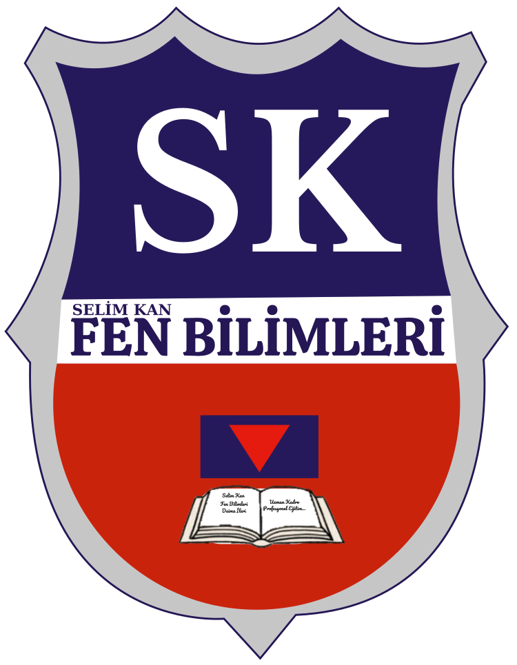
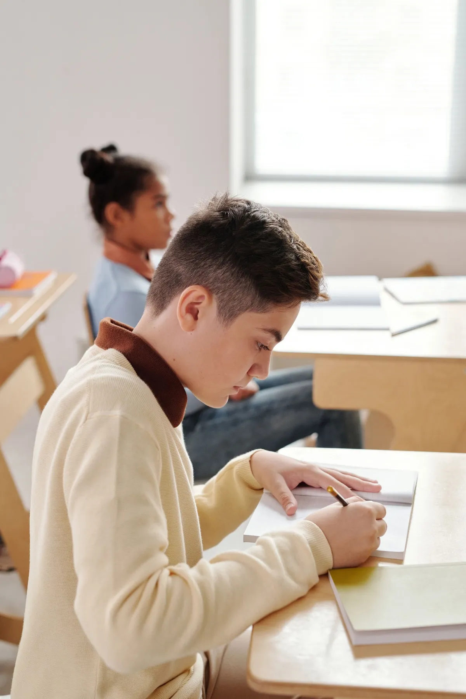
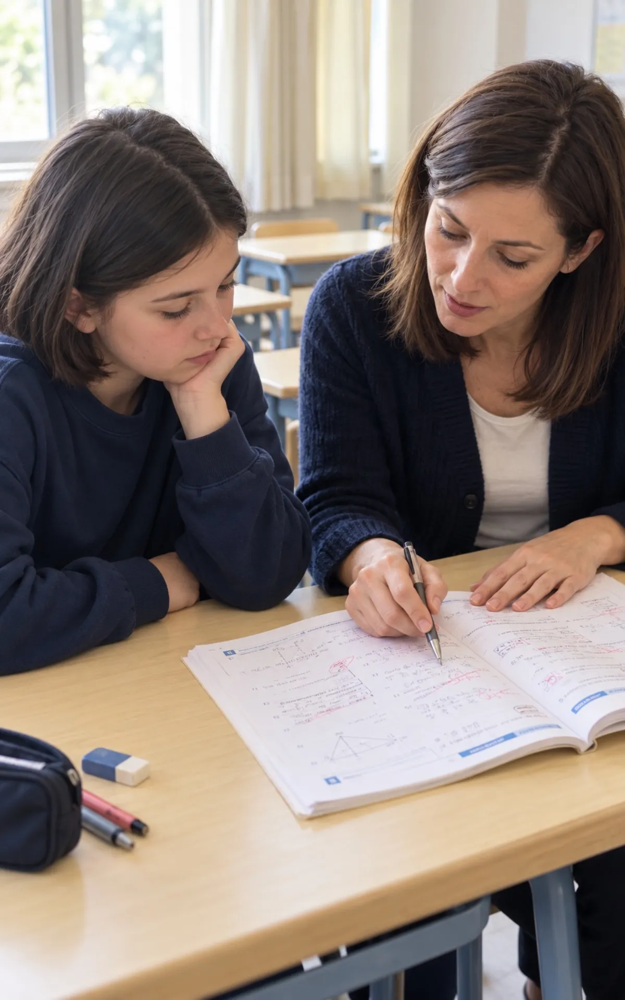
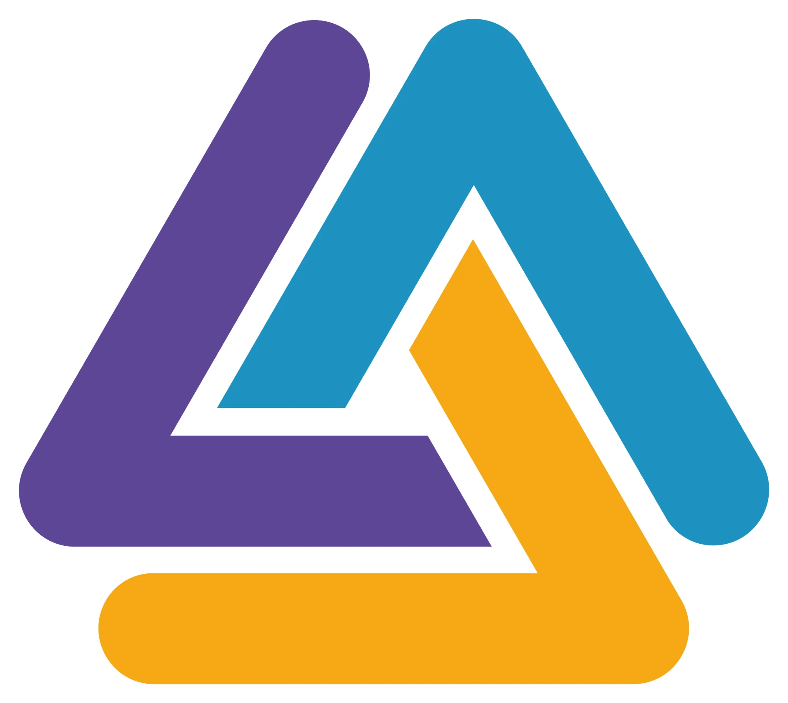
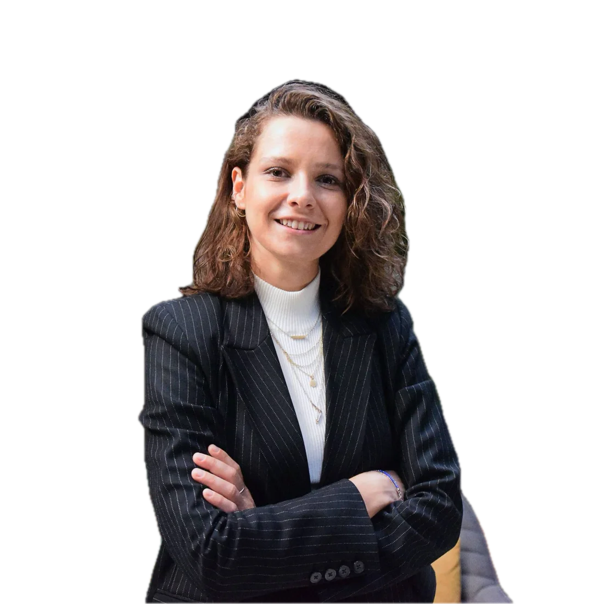
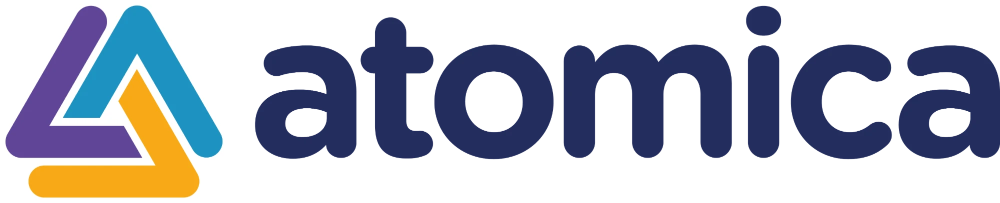
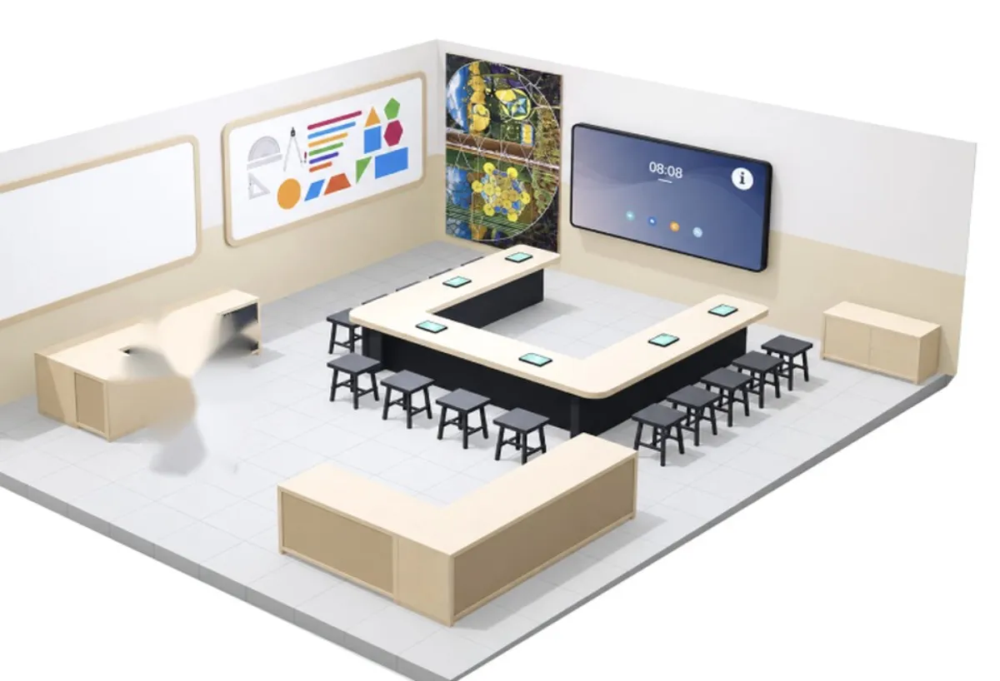

Ad SoyadVeli · 8. sınıf
Buraya izinli veli yorumu gelecek. İki üç cümlelik bir yorum kartı dengeli gösterir.
”Örnek

SK Fen BilimleriLGS ve YKS hazırlığı, birebir özel ders, deneme analizi ve koçluk; hepsi öğrencinin kişisel çalışma planında birleşir.
Çoğu kurumda ders anlatılır, deneme yapılır. SK’de aradaki bağ kurulur: ölçülür, planlanır, takip edilir ve veliyle paylaşılır.
Kimlik bilgisi içermeyen örnek bir deneme sonucu, Hata Karnesi ve ondan çıkan haftalık çalışma planı.
Her program aynı akademik sistemin içinde ilerler: ölçülür, planlanır, takip edilir.
Ödev ve etüt desteği, Atomica Matematik Atölyesi, Dil Atölyesi ve Mutluluk Sokağı.
İlkokul Katı →Okul başarısı, matematik temeli, düzenli çalışma ve eksiklerin erken kapanması.
Programı incele →LGS’ye sadece dersle değil, sistemle hazırlan: deneme, Hata Karnesi ve koçluk.
Programı incele →
Okul derslerinde akademik destek ve TYT’nin temeli aynı planda.
Programı incele →TYT ve YKS’de hedef, netler ve konu eksikleri birlikte yönetilir.
Programı incele →Deneme ve Hata Karnesi verisine göre planlanan hedefli birebir ders.
Programı incele →
Öğrencilerimiz LGS ve YKS hazırlık süreçlerini kendi ağızlarından anlatıyor.
Örnek düzen: gerçek öğrenci adı, derecesi ve videosu eklenecek
Sınıfta öğretmen, görüşmede koç, evde dijital içerik: aynı planın üç ayağı.
Yönetici, öğretmen ve koçlar aynı sistemin içinde çalışır; veli görüşmelerini Ayşe Hanım yürütür.
Koç, haftalık planı öğrenciyle birlikte hazırlar; hedefi netleştirir, çalışma disiplinini oturtur.
Ders dışında da öğrencinin yanında olan içerik ve uygulamalar; hepsi aynı çalışma planına bağlı.
Örnek düzen: her karta kısa yatay tanıtım videosu eklenecek
SK Deneme Kulübü’nde sınav yalnızca puan üretmez; sonraki çalışma planına veri sağlar.
Deneme Kulübü’nü incele →Öğrencinin odaklanabileceği, düzenli çalışabileceği ve akademik sistemle bağlantısını sürdürebileceği kontrollü çalışma alanı.
VIP Kütüphane’yi incele →

Gizem AynacıAtomica kurucusu · Atölye eğitmeni
Fiziksel matematik materyalleri, öğretmen rehberliği ve Atomica’nın etkileşimli dijital oyunları aynı atölyede. Atölyede başlayan öğrenme, Atomica’da yeniden deneyime dönüşür.
Yalnızca izinli ve gerçek yorumlara yer veriyoruz.
Buraya izinli veli yorumu gelecek. İki üç cümlelik bir yorum kartı dengeli gösterir.
Buraya izinli öğrenci yorumu gelecek. Hazırlık sürecini kısa anlatan bir cümle yeterli.
Buraya izinli veli yorumu gelecek. Velinin ilk görüşmeden sonraki izlenimi burada yer alır.
Buraya izinli öğrenci yorumu gelecek. Deneme ve Hata Karnesi deneyimi anlatılabilir.
Buraya izinli veli yorumu gelecek. Veli bilgilendirme sıklığıyla ilgili bir cümle olabilir.
Buraya izinli öğrenci yorumu gelecek. VIP Kütüphane ve koçluk deneyimi anlatılabilir.
Küçükyalı kampüsümüzü dersliklerimiz, VIP Kütüphanemiz ve Atomica Matematik Atölyemizle yakından tanıyın.

Gerçek kampüs fotoğrafları ve kampüs turu videosu eklenecek · Kampüsü yerinde görmek için ziyaret planlayın →
Öğrencinin sınıfı, hedefi ve ihtiyacı birlikte değerlendirilir; buna göre uygun program belirlenir. Görüşmeyi yüz yüze kampüsümüzde yapabiliriz. Online seçenek ve süre eklenecek
Deneme ve ölçmelerdeki hatalar konu ve kazanım bazında kaydedilir; sonraki çalışma planı bu veriye göre şekillenir.
İhtiyaç analiziyle başlar, ders ve öğretmen eşleştirmesi yapılır. Gelişim kısa ölçmelerle takip edilir; gerekirse ana akademik sisteme ve koçluğa bağlanır.
Katılım koşulları için bizimle iletişime geçebilirsiniz.
Atölye şu anda 5. sınıf matematik odağında çalışır. Ayrıntılar için atölye sayfasına bakabilirsiniz.
Hangi programlarda geçerli olduğu eklenecek
Öğrencinin sınıfını ve ihtiyacını bize iletin; uygun program için görüşme planlayalım.